Kunstbücher · Illustrator, Visions of Heaven and Hell & Imaginer · nach dem Revelations-Archiv
Die Kunstbücher
Barker malt und zeichnet, seit er schreibt — meist bevor er schreibt. Drei Buchprojekte machen dieses Parallelwerk zugänglich: die frühen Illustrator-Bände, der Rizzoli-Band Visions of Heaven and Hell und die achtbändige Werkschau Imaginer.
Illustrator I & II
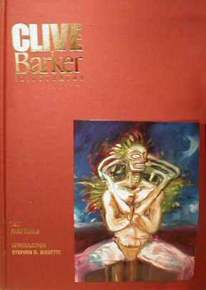
Worum es geht
Die ersten Bücher, die Barkers Skizzen und Zeichnungen sammelten: Clive Barker, Illustrator (1990) und Illustrator II (1993), beide bei Eclipse erschienen und von Fred Burke herausgegeben. Hier stehen die Entwürfe zu Geschichten, Romanen und Filmen neben Figuren, die nirgendwo sonst auftauchen — Pinhead und die Nightbreed, wie sie zuerst gedacht waren.
Aus dem Archiv
-
Angekündigt hatte Barker das Projekt schon 1989: ein großformatiges Kunstbuch seiner Arbeiten, aufgesetzt gemeinsam mit Steve Niles — fertig werde es in ein paar Jahren.
Comic Buyer’s Guide, 1989
-
Steve Bissette beschrieb die Blätter im Vorwort des ersten Bandes als Saatgut: Skizzen und Doodles, aus denen später Erzählungen, Romane und Filme wurden — der Beleg, wie sehr Barkers Schreiben im Zeichnen wurzelt.
Introduction · Clive Barker, Illustrator, 1990
-
Herausgeber Fred Burke nannte den ersten Band rückblickend einen Einführungskurs. Dazwischen lag die Ausstellung in der Bess Cutler Gallery in New York (1993), die Barker über Nacht zum gefragten Maler machte — der zweite Band geht dieser Verwandlung nach.
Illustrator II: The Art of Clive Barker, 1993
Ausgaben
Klick vergrößert das Cover
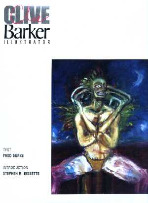
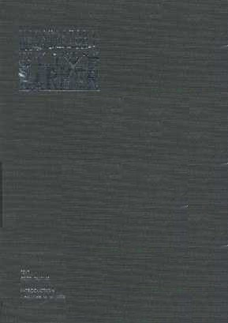
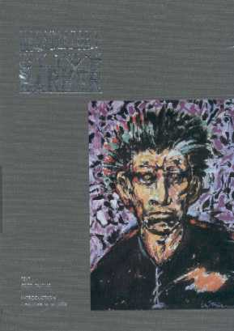
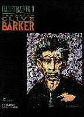
Visions of Heaven and Hell
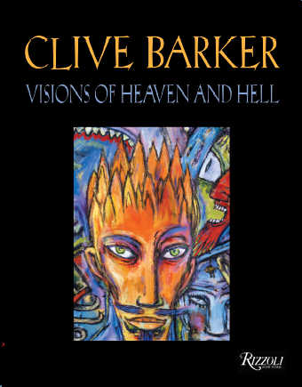
Worum es geht
Der große Rizzoli-Band von 2005: knapp 400 Farbabbildungen auf rund 400 Seiten, mit zwölf ausklappbaren Tafeln und Goldschnitt. Designerin Alicia Mikles, die auch die Abarat-Bücher gestaltete, ordnete Gemälde und Zeichnungen aus drei Jahrzehnten in zehn thematische Kapitel — von den Abarat-Inseln bis zur erotischen Kunst.
Clive über das Buch
-
Ein Buch der Bilder, nicht der Worte, so wollte Barker es: Man solle sich mit seiner Lieblingsmusik zurücklehnen, das Buch aufschlagen und eine Weile träumen.
Fantasy Worlds, 2005
-
Die Kapitelstruktur verdankt das Buch Alicia Mikles: Sie legte Bilder nebeneinander und fand Bildfäden, die Barker in seinen eigenen Arbeiten nie gesehen hatte — erst im Nebeneinander entdeckte er die Spirale, die zwei Bilder verband.
Fangoria, 2005
-
Ein Bild fehlte beinahe: Den Besitzer des Gemäldes The Arsonist konnte Barker trotz Suche nie ausfindig machen — reproduziert wurde es notgedrungen von einem kleinen Dia.
Revelations-Interview, 2005
-
Über den Goldschnitt, der die Seiten anfangs zusammenkleben ließ, und die geplante limitierte Ausgabe sprach Barker Ende 2005 auch mit der deutschen Fanseite That’s Clive! — der Verlag empfahl, die Seiten einmal rasch durchzufächern.
That’s Clive!, 2005
Ausgaben
Klick vergrößert das Cover

Die Imaginer-Reihe
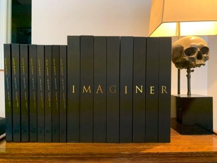
Worum es geht
Acht Bände, rund 1600 Seiten: die Werkschau der Ölgemälde von 1993 bis 2012, sämtlich neu und hochauflösend fotografiert. Die ersten beiden Bände gab Thomas Negovan bei Century Guild heraus, per Kickstarter finanziert; ab Band 3 führten Phil & Sarah Stokes die Reihe im Clive Barker Archive zu Ende. Jeder Band erschien limitiert auf 1000 Exemplare, dazu je 100 Deluxe-Ausgaben in Leder mit Schmuckkassette.
Clive über das Buch
-
Die neuen Reproduktionen nannte Barker eine Offenbarung: Er verglich sie mit den Original-Leinwänden — Farben, Texturen und der Fluss des Pinsels seien so genau getroffen, dass ihn das Betrachten daran erinnerte, wie er die Bilder gemalt hatte.
Facebook, 2014
-
Für Barker beantwortet die Reihe die Frage nach dem Ursprung: Er war Bildkünstler, bevor er Autor wurde — Imaginer sei das fehlende Element, das allem anderen vorausgeht. Wer wissen wolle, woher seine Ideen kommen, finde hier die Antwort.
The Hollywood Reporter, 2014
-
Beim fünften Band fehlten ihm die Worte: der schönste der Reihe bis dahin — und eines der schönsten Kunstbücher, die er je gesehen habe.
Revelations-Interview, 2017
-
Die fertige Reihe erinnerte ihn an seine Lieblingsbücher der Kindheit: zwölf üppig illustrierte Enzyklopädie-Bände, darunter eine seitenlange Darstellung des Amazonas von der Quelle bis zum Meer — wenn es einen Einfluss auf seine Fantastik gebe, auf den er zeigen könne, dann diese Seite.
Revelations-Interview, 2020
Die acht Bände
Klick vergrößert das Cover
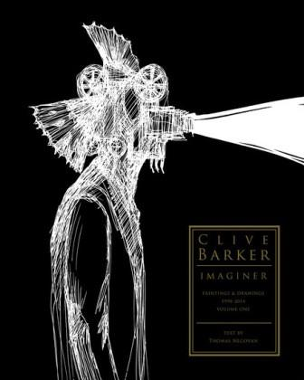
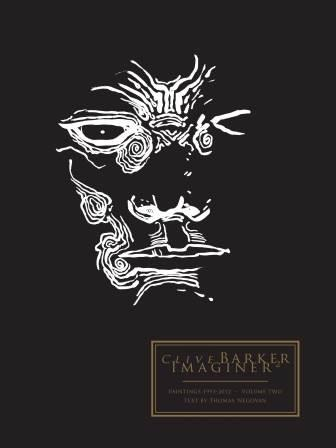
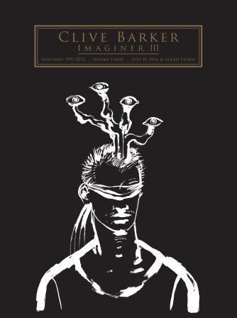
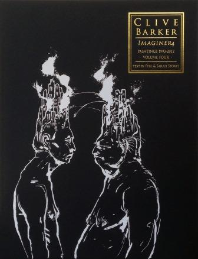
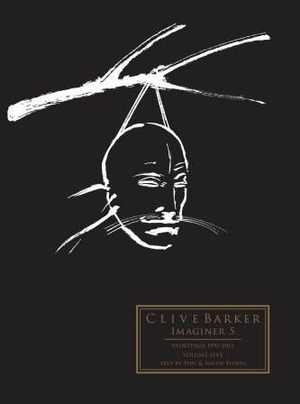
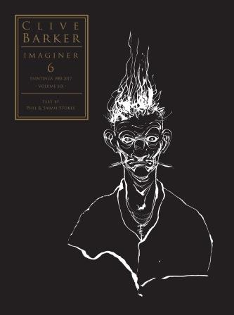
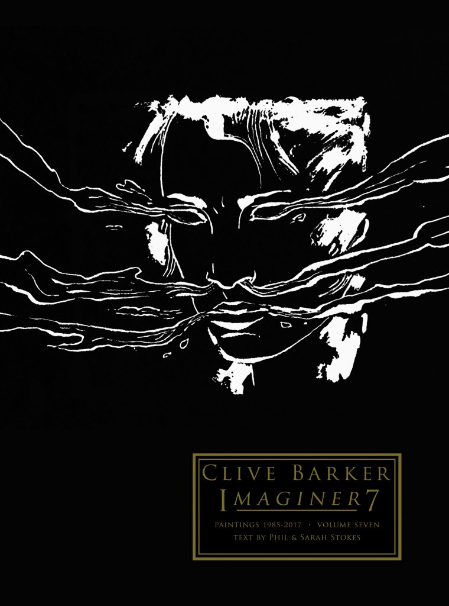
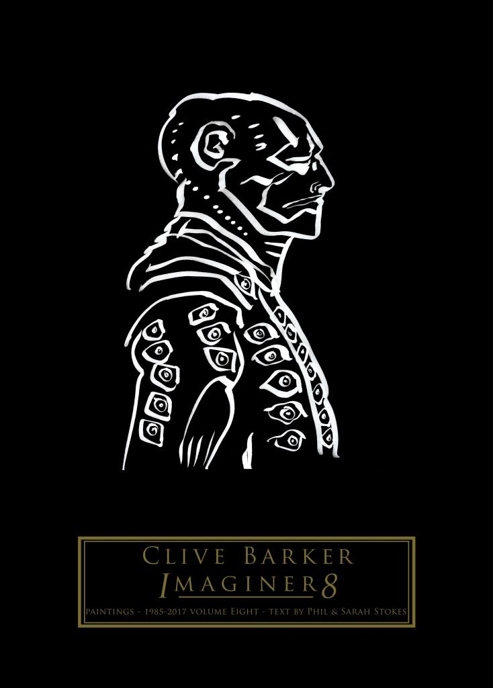
Cover-Abbildungen: Revelations-Archiv (clivebarker.info) · Artwork © Clive Barker bzw. der jeweiligen Verlage